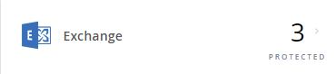

NetApp SaaS Backup for Office 365を使用したリストアの管理 GitHubで編集 ドキュメントの変更をリクエストする
貢献者
NetApp SaaS Backup for Office 365を使用して、高レベルおよび詳細レベルのリストアを実行できます。
デフォルトでは、最新のバックアップのみを復元に使用できます。バックアップ設定を更新して、指定した数の個々のファイルのバックアップバージョンを維持できます。バックアップ用に指定したバージョンよりも多くのバージョンのファイルがある場合は、指定したバージョンの数だけを復元に使用できます。
高レベルのサービスの復元を実行する
同じ手順に従って、Microsoft Exchange Online、MySites for Microsoft OneDrive for Business、Microsoft SharePoint Online用のサイト、およびMicrosoft Office 365グループ用のメールボックスの高レベルの復元を実行します。
ダッシュボードで、復元を実行したいサービスのボックス内の保護されている上の番号をクリックします。

あなたは、Microsoft Exchange Onlineの共有メールボックスを復元する場合は、 共有タブをクリックします。
Microsoft Exchange Onlineのアーカイブメールボックスを復元している場合は、[ アーカイブ ]タブをクリックします。注：アーカイブメールボックスはユーザーの通常のメールボックスに復元されます。
共有されていないメールボックスを復元している場合は、[ ユーザー ]タブのままにします。復元したい項目を選択します。
復元をクリックします。

復元オプションを選択します。
Microsoft Exchange Onlineのメールボックスを復元する場合は、次のいずれかのオプションを選択してください。
同じメールボックスに復元する
PSTにエクスポート
PSTにエクスポートすると、エクスポートが完了したときにPSTファイルの場所を通知する電子メールが届きます。別のメールボックスに復元する
別のメールボックスに復元する場合は、検索フィールドに宛先メールボックスを入力する必要があります。検索フィールドに宛先Eメールアドレスの一部を入力して、一致する宛先メールボックスの自動検索を開始できます。
Microsoft Office 365グループのグループを復元する場合は、次のいずれかのオプションを選択してください。
同じグループに復元する
輸出する
エクスポートすると、PSTファイルがMicrosoft Exchangeファイルとともに作成され、.zipファイルがMicrosoft SharePointサイトと共に作成されます。 PSTファイルの場所と.zipファイルの場所への認証済みURLが記載された通知メールが届きます。
MySites for Microsoft OneDrive for Businessを復元する場合は、次のいずれかのオプションを選択してください。
同じMySiteに復元する
別のMySiteに復元する
別のMySiteに復元する場合は、検索フィールドに宛先MySiteを入力する必要があります。検索フィールドに宛先MySiteの一部を入力して、一致する宛先MySiteの自動検索を開始できます。輸出する
エクスポートすると、MySitesと共に.zipファイルが作成されます。 .zipファイルの場所への認証されたURLを含む通知メールが届きます。
確認をクリックします。
復元ジョブが作成されたことを示すメッセージが表示されます。復元の進行状況を監視するには、 [ ジョブの進行状況を表示]をクリックします 。
Microsoft Exchange Onlineの詳細レベルの復元を実行する
Microsoft Exchange Onlineでは、個々の電子メール、タスク、連絡先、カレンダーの予定など、1人のユーザーの詳細レベルの項目を復元できます。 Microsoft Office 365グループメールボックスの詳細レベルの項目を復元することもできます。
ダッシュボードで、[Exchange]ボックスの[ PROTECTED ]の上にある番号をクリックします。

あなたは、Microsoft Exchange Onlineの共有メールボックスを復元する場合は、 共有タブをクリックします。
Microsoft Exchange Onlineのアーカイブメールボックスを復元している場合は、[ アーカイブ ]タブをクリックします。
通常のメールボックスを復元している場合は、[ USER ]タブのままにします。詳細レベルのリストアを実行する必要があるメールボックスをクリックします。
Microsoft Office Exchangeカテゴリ全体を復元するか、カテゴリ内の特定の項目を復元します。
Microsoft Office 365グループメールボックスの場合、メールカテゴリまたはカレンダカテゴリから復元するオプションしかありません。カテゴリ全体を復元するには
復元する必要があるカテゴリを選択してください。
復元をクリックします。
復元オプションを選択します。
同じメールボックスに復元する
同じメールボックスに復元すると、既定では、バックアップコピーを含む元のコンテンツの場所に、現在の日付とタイムスタンプを含む復元フォルダが作成されます。 [ 既存のコンテンツを置き換える]を選択すると、現在のデータは完全にバックアップに置き換えられます。
Microsoft Office 365グループの場合、同じメールボックスに復元することしかできず、既存のコンテンツを置き換えることはできません。 Microsoft Exchange Onlineでは、同じメールボックスに復元して既存のコンテンツを置き換えることも、他のメールボックスに復元することもできます。Microsoft Exchangeの場合のみ：別のメールボックスに復元する
別のメールボックスに復元する場合は、検索フィールドに宛先メールボックスを入力する必要があります。検索フィールドに宛先Eメールアドレスの一部を入力して、一致する宛先メールボックスの自動検索を開始できます。Microsoft Exchangeのみ：PSTにエクスポート
すべてのカテゴリサブフォルダを含めるように選択できます。
PSTにエクスポートすると、エクスポートが完了したときにPSTファイルの場所を通知する電子メールが届きます。注：このオプションは、Microsoft Office 365グループには使用できません。Office 365グループのみ：エクスポート
エクスポートすると、PSTファイルがMicrosoft Exchangeファイルとともに作成され、.zipファイルがMicrosoft SharePointサイトに作成されます。 PSTファイルの場所と.zipファイルの場所への認証済みURLが記載された通知メールが届きます。
確認をクリックします。
復元の進行状況を監視するには、 [ ジョブの進行状況を表示]をクリックします 。
1つ以上の特定の項目を復元するには
復元する単一アイテムのカテゴリ（メール、仕事、連絡先、またはその他）をクリックします。
復元したい項目を選択します。
メールの場合は、フォルダ全体またはフォルダ内の特定のEメールを復元できます。フォルダ全体を復元するには、フォルダを選択します。個々のEメールを復元するには、Eメールを含むフォルダーを選択してから、そのフォルダー内の個々のEメールを選択します。復元をクリックします。
復元オプションを選択します。
Microsoft Office 365グループの場合、同じメールボックスに復元することしかできず、既存のコンテンツを置き換えることはできません。 Microsoft Exchange Onlineでは、同じメールボックスに復元して既存のコンテンツを置き換えることも、別のメールボックスに復元することもできます。同じメールボックスに復元する
同じメールボックスに復元すると、既定では、バックアップコピーを含む元のコンテンツの場所に、現在の日付とタイムスタンプを含む復元フォルダが作成されます。 [ 既存のコンテンツを置き換える]を選択すると、現在のデータは完全にバックアップに置き換えられます。PSTにエクスポート
すべてのカテゴリサブフォルダを含めるように選択できます。
PSTにエクスポートすると、エクスポートが完了したときにPSTファイルの場所を含む通知メールが届きます。注：このオプションは、Microsoft Office 365グループには使用できません。別のメールボックスに復元する
別のメールボックスに復元する場合は、検索フィールドに宛先メールボックスを入力する必要があります。検索フィールドに宛先Eメールアドレスの一部を入力して、一致する宛先メールボックスの自動検索を開始できます。
確認をクリックします。
復元ジョブが作成されたことを示すメッセージが表示されます。復元の進行状況を監視するには、 [ ジョブの進行状況を表示]をクリックします 。
Microsoft OneDrive for Businessの詳細レベルの復元を実行する
Microsoft OneDrive for Business内では、個々のフォルダーやファイルなどの詳細レベルのアイテムをリストやライブラリに復元できます。
ダッシュボードで、OneDriveボックスのPROTECTEDの上の番号をクリックします。
詳細レベルのリストアを実行する必要があるMySiteをクリックします。
ファイルのグループまたは個々のファイルを復元します。
ファイルのグループを復元するには
ファイルのグループを選択してください。
復元をクリックします。
復元オプションを選択します。
同じMySiteに復元する
別のMySiteに復元する
別のMySiteに復元する場合は、検索フィールドに宛先MySiteを入力する必要があります。検索フィールドに宛先MySiteの一部を入力して、一致する宛先MySiteの自動検索を開始できます。輸出する
注：このオプションは個々のファイルの復元には使用できません。フォルダレベルで利用可能です。フォルダのエクスポートを選択した場合は、必要に応じてサブフォルダを含めるオプションが表示されます。
エクスポートすると、PSTファイルがMicrosoft Exchangeファイルとともに作成され、.zipファイルがMicrosoft SharePointサイトと共に作成されます。 PSTファイルの場所と.zipファイルの場所への認証済みURLが記載された通知メールが届きます。
確認をクリックします。
復元の進行状況を監視するには、 [ ジョブの進行状況を表示]をクリックします 。
1つ以上の個々のファイルを復元するには
ファイルグループをクリックします。
復元したいファイルを選択します。
フォルダ全体、またはフォルダ内の特定のファイルを復元できます。フォルダ全体を復元するには、フォルダを選択します。特定のファイルを復元するには、ファイルを含むフォルダを選択してから、そのフォルダ内の個々のファイルを選択します。復元をクリックします。
復元オプションを選択します。
次の復元オプションのいずれかを選択できます。同じMySiteに復元する
個々のファイルを同じMySiteに復元する場合、デフォルトでは、現在の日付とタイムスタンプを含む復元フォルダがバックアップコピーを含む元のコンテンツの場所に作成されます。 [ 既存のコンテンツを置き換える]を選択すると、現在のデータは完全にバックアップに置き換えられます。別のMySiteに復元する
別のMySiteに復元する場合は、検索フィールドに宛先MySiteを入力する必要があります。検索フィールドに宛先MySiteの一部を入力して、一致する宛先MySiteの自動検索を開始できます。
確認をクリックします。
復元ジョブが作成されたことを示すメッセージが表示されます。復元の進行状況を監視するには、 [ ジョブの進行状況を表示]をクリックします 。
Microsoft SharePoint Onlineの詳細レベルのリストアを実行する
Microsoft SharePoint Onlineでは、個々のフォルダやファイルなど、1人のユーザーの詳細レベルの項目を復元できます。 Microsoft Office 365グループサイトの詳細レベルの項目を復元することもできます。
ダッシュボードで、[SharePoint]ボックスの[ 保護 ]の上の数字をクリックします。
詳細レベルのリストアを実行する必要があるサイトをクリックします。
Microsoft SharePoint Onlineのコンテンツカテゴリ全体を復元するか、特定のコンテンツアイテムを復元します。
コンテンツカテゴリ全体を復元するには
復元する必要があるカテゴリを選択してください。
復元をクリックします。
復元オプションを選択します。
Microsoft Office 365グループの場合は、同じサイトに復元することしかできません。 Microsoft SharePoint Onlineの場合は、同じサイトまたは別のサイトに復元できます。同じサイトに復元する
同じサイトに復元する場合、デフォルトでは、現在の日付とタイムスタンプを含む復元フォルダがバックアップコピーを含む元のファイルの場所に作成されます。 [ 上書きして上書き ]オプションを選択した場合、復元フォルダは作成されません。バックアップファイルのバージョンと現在のファイルが一致すると、バックアップは元の場所に復元されます。宛先の新しいコンテンツは無視され、影響を受けません。たとえば、バックアップにFile1バージョン5が含まれ、デスティネーションにFile1バージョン6が含まれている場合、[ 上書きで上書き ]オプションを選択したリストアは失敗します。 [ 既存のコンテンツを置き換える ]オプションを選択した場合、現在のバージョンのデータは完全にバックアップコピーに置き換えられます。別のサイトに復元する
別のサイトに復元する場合は、検索フィールドに宛先サイトを入力する必要があります。検索フィールドにサイトの一部を入力して、一致するサイトの自動検索を開始できます。輸出する
注：このオプションは個々のファイルの復元には使用できません。フォルダレベルで利用可能です。フォルダのエクスポートを選択した場合は、必要に応じてサブフォルダを含めるオプションが表示されます。エクスポートすると、PSTファイルがMicrosoft Exchangeファイルとともに作成され、.zipファイルがMicrosoft SharePointサイトと共に作成されます。 PSTファイルの場所と.zipファイルの場所への認証済みURLが記載された通知メールが届きます。
確認をクリックします。
復元ジョブが作成されたことを示すメッセージが表示されます。復元の進行状況を監視するには、 [ ジョブの進行状況を表示]をクリックします 。
1つ以上の特定のコンテンツアイテムに復元するには
復元する単一アイテムのコンテンツカテゴリをクリックします。
復元したい項目を選択します。
アイテムの最新バージョンを復元する場合は、[ 復元 ]をクリックしてから復元オプションを選択します。
Microsoft Office 365グループの場合は、同じサイトに復元することしかできません。 Microsoft SharePoint Onlineの場合は、同じサイトまたは別のサイトに復元できます。同じサイトに復元する
同じサイトに復元する場合、デフォルトでは、現在の日付とタイムスタンプを含む復元フォルダがバックアップコピーを含む元のファイルの場所に作成されます。 [ 上書きして上書き ]オプションを選択した場合、復元フォルダは作成されません。バックアップファイルのバージョンと現在のファイルが一致すると、バックアップは元の場所に復元されます。宛先の新しいコンテンツは無視され、影響を受けません。たとえば、バックアップにFile1バージョン5が含まれ、デスティネーションにFile1バージョン6が含まれている場合、[ 上書きで上書き ]オプションを選択したリストアは失敗します。 [ 既存のコンテンツを置き換える ]オプションを選択した場合、現在のバージョンのデータは完全にバックアップコピーに置き換えられます。別のサイトに復元する
別のサイトに復元する場合は、検索フィールドに宛先サイトを入力する必要があります。検索フィールドにサイトの一部を入力して、一致するサイトの自動検索を開始できます。
アイテムの前のバージョンを復元する場合は、[ バージョンの表示 ]をクリックします 。
復元したいバージョンを選択します。
復元をクリックします。
同じサイトにも別のサイトにも復元できます。別のサイトに復元する場合は、検索フィールドに宛先サイトを入力する必要があります。検索フィールドにサイトの一部を入力して、一致するサイトの自動検索を開始できます。
確認をクリックします。
復元ジョブが作成されたことを示すメッセージが表示されます。復元の進行状況を監視するには、 [ ジョブの進行状況を表示]をクリックします 。
以前のバックアップから復元する
デフォルトでは、最新のバックアップのみを復元に使用できます。
ダッシュボードで、復元を実行するサービスの[ 保護されている場所]ボックスの上にある番号をクリックします。
あなたは、Microsoft Exchange Onlineの共有メールボックスを復元する場合は、 共有タブをクリックします。
Microsoft Exchange Onlineのアーカイブメールボックスを復元している場合は、[ アーカイブ ]タブをクリックします。注：アーカイブメールボックスはユーザーの通常のメールボックスに復元されます。
通常のメールボックスを復元している場合は、[ USER ]タブのままにします。復元したい項目をクリックします。
バックアップ履歴の表示をクリックします 。
カレンダーが表示されます。バックアップが利用可能な日付は緑色の円で示されています。選択した日数にわたってバックアップされたアイテムを表示したい場合は、[ 選択したバックアップを表示 ]をクリックし、ドロップダウンメニューから定義済みの日数のいずれかを選択します。
それ以外の場合は、復元するバックアップの日付をクリックしてから、特定のバックアップを選択します。
復元したい項目を選択します。
復元をクリックします。
復元オプションを選択します。
Microsoft Exchange OnlineのメールボックスまたはMicrosoft Office 365グループのメールボックスを復元する場合は、次のいずれかのオプションを選択します。
同じメールボックスに復元する
同じメールボックスに復元する場合、既定では、現在の日付とタイムスタンプを含む復元フォルダがバックアップコピーを含む元のコンテンツの場所に作成されます。 [ 既存のコンテンツを置き換える]を選択すると、現在のデータは完全にバックアップに置き換えられます。別のメールボックスに復元する
別のメールボックスに復元する場合は、検索フィールドに宛先メールボックスを入力する必要があります。検索フィールドに宛先Eメールアドレスの一部を入力して、一致する宛先メールボックスの自動検索を開始できます。
MySites for Microsoft OneDrive for Businessを復元する場合は、次のいずれかのオプションを選択してください。
同じMySiteに復元する
個々のファイルを同じMySiteに復元する場合、デフォルトでは、現在の日付とタイムスタンプを含む復元フォルダがバックアップコピーを含む元のコンテンツの場所に作成されます。 [ 既存のコンテンツを置き換える]を選択すると、現在のデータは完全にバックアップに置き換えられます。フォルダ全体を復元している場合は、[ 既存のコンテンツを置き換える ]オプションは使用できません。別のMySiteに復元する
別のMySiteに復元する場合は、検索フィールドに宛先MySiteを入力する必要があります。検索フィールドに宛先MySiteの一部を入力して、一致する宛先MySiteの自動検索を開始できます。
Microsoft SharePoint Onlineのサイトを復元している場合は、同じサイトまたは別のサイトに復元できます。 Microsoft Office 365グループサイトを復元している場合は、同じサイトにのみ復元できます。
同じサイトに復元する
同じサイトに復元する場合、デフォルトでは、現在の日付とタイムスタンプを含む復元フォルダがバックアップコピーを含む元のファイルの場所に作成されます。 [ 上書きして上書き ]オプションを選択した場合、復元フォルダは作成されません。バックアップファイルのバージョンと現在のファイルが一致すると、バックアップは元の場所に復元されます。宛先の新しいコンテンツは無視され、影響を受けません。たとえば、バックアップにFile1バージョン5が含まれ、デスティネーションにFile1バージョン6が含まれている場合、[ 上書きで上書き ]オプションを選択したリストアは失敗します。 [ 既存のコンテンツを置き換える ]オプションを選択した場合、現在のバージョンのデータは完全にバックアップコピーに置き換えられます。別のサイトに復元する
別のサイトに復元する場合は、検索フィールドに宛先サイトを入力する必要があります。目的のサイトの一部を検索フィールドに入力して、一致するサイトの自動検索を開始できます。
確認をクリックします。
復元ジョブが作成されたことを示すメッセージが表示されます。復元の進行状況を監視するには、 [ ジョブの進行状況を表示]をクリックします 。